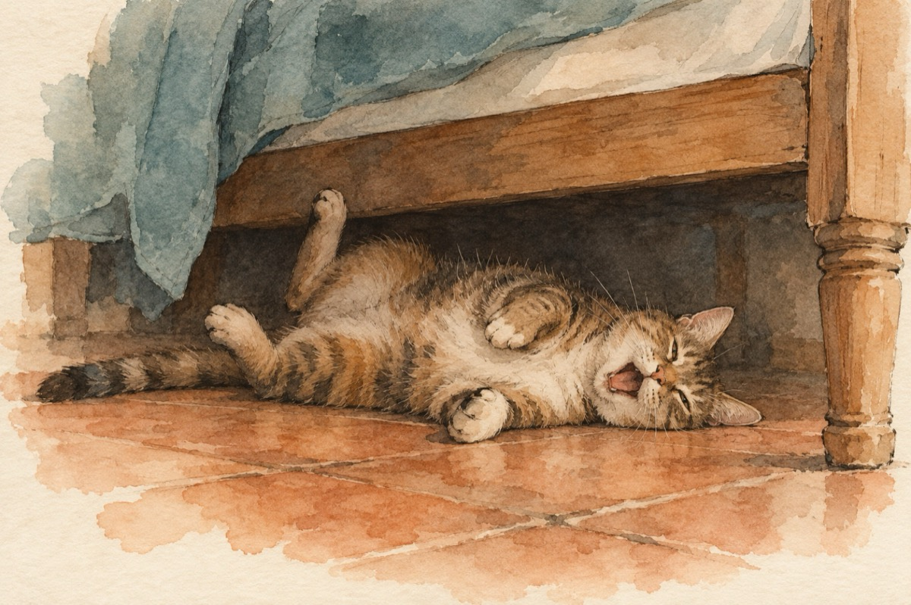

Pisicuța alcoolista
De vreți ca să știți cum râde
Pisicuța când e beată
Vă dosiți să nu vă vadă
Și-o lăsați de cap să-și facă
De-ntrebați cum s-a-mbătat
Pare-a fi ne-adevărat
Mâncând un șoarece beat,
Asta i s-a întâmplat!...
Chiț, chiț, chiț și miau, miau, miau,
Vreau un șoarece să beau.
Ba pardon!...Vreau să-l mănânc
Și pe urmă să mă culc…(sughiță)
Miau, miau, miauuuu!...
Vreau un șoarece să …miauuu!... (cască)
Vrând să sară de pe pat
N-a putut s-a-mpiedicat
Și-ncet de-a tumbă s-a dat
Și-acum râde pe sub pat!...
De-aveți în casă-o pisică
Șoricei și vin și țuică
N-o mai lăsați nepăzită
C-o s-ajungă alcoolistă!...
Vasile Groza